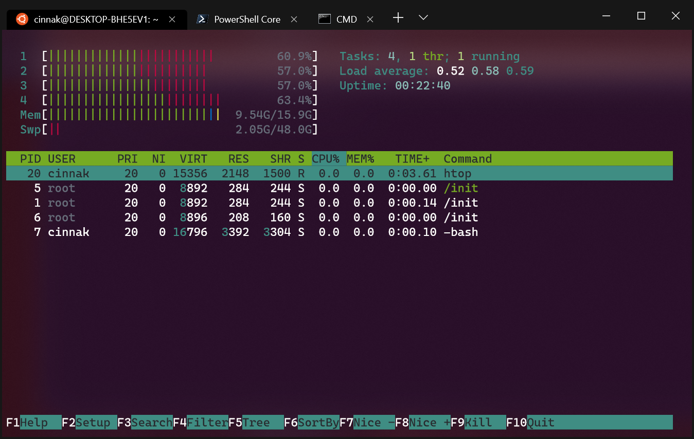

Yazılım Gündemi - 7
26 Ağustos - 1 Eylül 2019
İçindekiler
- 1. PHP Central Europe konferansı cinsiyetçilik suçlamaları yüzünden iptal edildi
- 2. NPM paket yönetim sistemi, terminal çıktısında reklam göstermeyi yasakladı
- 3. Windows Terminal Preview v0.4 yayınlandı
- 4. Google, Chrome tarayıcısına, web sitelerinin dosya sistemimize erişmesini sağlayacak API sistemi ekliyor
- 5. Yeni bir platform girişimi: Türkiye Açık Kaynak Platformu
- 6. Diğer Haberler
- 7. Lisans
< Önceki Gündem | 26 Ağustos - 1 Eylül 2019 | Sonraki Gündem >
1 PHP Central Europe konferansı cinsiyetçilik suçlamaları yüzünden iptal edildi
PHP topluluğundaki büyük organizasyonlardan biri olan PHP CE, bu yıl Almanya'da gerçekleşmesi planlanan etkinliğin web sitesinin ana sayfasında kısa bir mesaj yayınlayarak, konferansın iptal edildiğini ve devam etmeyeceğini duyurdu. Konferansın iptal edilme sebebi olarak da dipnot olarak şu üç tweet paylaşımının bağlantısını vermişler:
Olayları özetlemek gerekirse: Organizatörler normal işleyişe uygun olarak geçtiğimiz aylarda Konuşmacı Çağrısı (Call for Proposals) yapmışlar. Çağrı süresi bitince de, gelen başvurular içerisinden konferans içeriğine uygun olanları seçmişler ve geçtiğimiz haftalarda da konuşmacı listesi yayınlanmış.
Olaylar da burdan sonra başlıyor zaten. Yukarıdaki ilk tweet'de başlangıç ateşini sağlamış. Konferansın "tamamen beyaz erkek konuşmacılar"dan oluştuğunu söylemiş ve utanç duyduğunu belirtmiş. Tweet altında bir sürü tartışma mevcut.
Diğer tweet iki tweet blog yazılarının duyurusundan ibaret. Larry Garfield tarafından yazıyı kısaca özetlemek gerekirse: Bu yılın başlarında PHP CE organizatörleri kendisine konferansta konuşmacı olmayı teklif etmişler ve kabul etmiş. Konuşmacı listesi açıklandıktan sonra hiç kadın konuşmacı olmamasından dolayı bir rahatsızlık duymuş ve konuyu organizatörler ile konuşarak, gerekirse konuşmacı bulma ve masrafları karşılama konusunda yardımcı olabileceğini söylemiş. Organizatörler, "böyle bir düzenlemeye açık olmadıklarını" belirtmişler ve gelen başvurulardan sadece bir tanesinin kadın olduğunu, onun da daha önce lokal bir etkinlikle yapılan sunumun tekrarı olduğu için reddedildiğini söylemişler. Anladığım kadarıyla bu kişi organizatörler ile konuşmacı başvurusu süreci dolduktan sonra konuşmuş. Zaten yazıda da organizatörlerin "konuşmacı çağrısı süreci doldu ve yeniden açamayız" dediklerini aktarıyor. Bunun üzerine blog yazısını yazan kişi de etkinlikte konuşmacı olmaktan vazgeçtiğini söylüyor.
Diğer blog yazısında da Mark Baker isimli kişi etkinlikte konuşmacı olmaktan aynı nedenlerle vazgeçtiğini söylüyor.
Konu Reddit ve HackerNews gibi platformlarda da bir gün boyunca üst sıralarda yer aldı ve tartışıldı. Oralarda yazılanların da bazılarını okudum. Benim şahsi görüşüm pek cinsiyetçi bir tutum olmadığı yönünde. Konuşmacı başvuruları sürecinin herkes için eşit olması gerektiğini düşünüyorum fakat Larry Garfield isimli kişiye konuşmacı olmasını teklif etmeleri biraz soru işareti yarattı bende. Neyse konu hakkında düşünmeye devam edeceğim ben, henüz net bir görüşe sahip değilim. Siz ne düşünüyorsunuz konu hakkında? Yorumlar kısmında konuşalım.
Bu arada konuyla ilgili sadece benim yazdıklarımla kalmayıp, ilgili bağlantılardaki yazıları kendinizin de okumasını tavsiye ederim. Belki benim yanlış anladığım ya da iyi çeviremediğim kısımları olmuş olabilir, insanları yanlış yönlendirmek istemem kesinlikle. Lütfen fikir sahibi olmadan önce diğer yazılanları da okuyun.
Konuyla ilgili, yazılım sektöründe çalışan bir kız arkadaşıma fikirlerini sordum. Müsait olduğunda yazıları okuyup geri dönüş yapacak. O geri dönüş yaptığında, onun da görüşlerini buraya ekleyeceğim.
2 NPM paket yönetim sistemi, terminal çıktısında reklam göstermeyi yasakladı
Geçtiğimiz haftanın Yazılım Gündemi yazısında (bkz: Yazılım Gündemi - 6) bahsetiğim olayın üzerine NPM şirketi sözleşmelere yeni maddeler ekleyerek söz konusu davranışı da içerisinde barındıran birkaç durumu yasakladı. Bunlar şu şekilde:
- Yazılım geliştirme döngüsünün herhangi bir parçasında (çalışma zamanı, yüklenme vb.) npm betiklerini kullanarak reklam gösteren paketler yasaklandı.
- Reklam göstermek için kod parçaları içeren paketlerde sorun yok (büyük ihtimal siteye reklam eklemeye yarayan yardımcı araçlar kast edilmiş) fakat doğrudan reklam gösteren paketler yasaklandı.
- Esas olarak reklam gösteren fakat önemsiz kod, veri ya da diğer teknik içerikler içeren paketler yasaklandı.
Bunun üzerine konunun gündeme gelmesini sağlayan kişide detaylıca bir blog yazısı yazarak olayın nereden başladığını, sürecin nasıl geliştiğini vb. tüm detaylarını anlattı. İlgili blog yazısına buradan ulaşabilirsiniz. Şahsen benim okuma fırsatım olmadı fakat konuyla ilgilenenlerin mutlaka okuması gereken bir yazı.
NPM şirketi de kendi blog sitelerinde "Supporting Open Source Maintainers" konulu bir yazı yayınlayarak, açık kaynak geliştiricilere destek olmakla ilgili çalışmalarından bahsetmiş.
3 Windows Terminal Preview v0.4 yayınlandı

Önceki bir yazılım gündemi yazısında da (bkz: Yazılım Gündemi - 4) söylediğim gibi Microsoft, uzun zamandır kendinden uzaklaşan geliştirici camiasını tekrar kazanmak için hamleler yapıyor. Bunlardan birisi de Windows Terminal. Bu hafta bir blog yazısı yayınlayarak preview v0.4 sürümünü duyurdu. Yapılan bazı değişiklikler şu şekilde:
- Sekme başlığında artık varsayılan olarak dosya yolu yerine profil ismi gözükecekmiş fakat isteyenler "tabTitle" özelliğini kendilerine göre özelleştirebilecek.
- Terminal uygulamasının ayar dosyasında yanlış bir yer varsa hata gösterecek.
- Seçileni otomatik kopyalama özelliğiyle ilgili global bir ayar eklenmiş.
Diğer değişiklikler için konu başlığına eklediğim blog yazısına göz atabilirsiniz.
4 Google, Chrome tarayıcısına, web sitelerinin dosya sistemimize erişmesini sağlayacak API sistemi ekliyor
Evet, yanlış okumadınız. İlk gördüğüm de ben de "nasıl ya?" dedim fakat Chrome
ekibi çoktan çalışmalara başlamış ve Chrome 78 sürümünde bu özelliği duyurmayı
planlamışlar. API sisteminin detaylarını pek fazla inceleyemedim ama sadece
https uzantılı sitelerde çalışacağı haberde söylenmiş. Ayrıca chrome://flags
kısmından açıp kapatma opsiyonu da var gözüküyor. Her ne kadar kullanıcı izini
gerektiriyor olsa da bence çok tehlikeli bir sistem. Deneyimli olmayan
kullanıcıların kandırılması ve sistemin suistimal edilmesi çok olası bir durum.
5 Yeni bir platform girişimi: Türkiye Açık Kaynak Platformu
Sektörden sosyal medya vasıtasıyla tanıdığım birçok isim bir araya gelmişler. Platform için uzun zamandır toplantılar devam ediyormuş. Bakalım ortaya ne çıkacak, ben de meraklıyım.
6 Diğer Haberler
- React takımı, ırkçılık suçlamaları nedeniyle yeni davranış kuralları getirmeye hazırlanıyor.
- Google, bir geliştiricinin 10 yıllık uygulamasını marketten silmiş fakat sonra geri adım atmış. Tüm süreç geliştiricinin blog yazısında anlatılmış.
- Google, veri doğrulama dili CUE ve araç setini duyurdu.
- WMware, Kubernetes sistemiyle ilgili ücretsiz materyal ve derslerin bulunduğu yeni bir platform açtı: Kubernetes Acedemy.
- Go modülleri için index ve checksum veritabanı duyuruldu.
- PowerShell içerisine zincir operatörleri eklenmesi konuşuluyor.
- Firefox 70 sürümünde daha hızlı bir JavaScript interpreter gelecekmiş.
- TypeScript 3.6 sürümü duyuruldu.
- Bir güvenlik açığını kapatan 3 yeni Ruby sürümü yayınlandı:
- Perl topluluğu, "Perl 6" ismi hakkında tartışıyor.
- Julia programlama dili geliştirilmesi ile ilgili durum raporu yayınlandı: Julia's Release Process.
- HHVM 4.20.0 ve 4.20.1 sürümleri duyuruldu.
- Dağıtık şekilde SQLite veritabanları barındırmaya yarayan Dqlite aracının ilk stabil sürümü duyuruldu.
- Postgres üzerinde WebAssembly çalıştırmaya yarayan eklenti açık kaynak olarak yayınlandı: postgres-ext-wasm.
- Emacs 26.3 yayınlandı.
- Emacs org-mode için sorgu dili kütüphanesi org-ql, v0.2 sürümünü duyurdu.
- Bilgisayara bağlı cihazlar ile iletişim kurmayı sağlayan Device.Net kütüphanesi 3.0 sürümünü duyurdu. Değişiklik Notları.
- Portray isimli Python projelerinizin dokümantasyonu için web sitesi oluşturma aracı ilk stabil versiyonunu yayınlandı.
- Test ve prototipleme için kullanılmak üzere sahte bilgiler döndüren GraphQL API sistemi açık kaynak olarak yayınlandı: GraphQLZero, GitHub Deposu.
- Dağıtık PGP anahtar sunucusu projesi dat-keyserver, v1.5.0 sürümünü çıkardı.
- Oyun programlama için kullanılan C++ kütüphanesi EnTT, v3.1.0 sürümünü duyurdu.
- Güvenli gömülü sistemler inşa etmek için ADA dili ile geliştirilen microkernel EwoK, v0.9.9 sürümünü çıkardı.
- Firebase için ORM aracı olan firebase-firestorm, v1.1.0 sürümünü çıkardı.
- Log kayıtlarını çeşitli servislere göndermeye yarayan PHP kütüphanesi monolog, v2.0.0 sürümü duyurdu.
- Google Summer of Code projesi Waypipe tamamlandı, GitLab Deposu.
- JOOQ, 3.12 sürümünü duyurdu.
- etcd, 3.4 sürümü duyuruldu.
7 Lisans

Yazılım Gündemi - 7 yazısı Eren Hatırnaz tarafından Creative Commons Atıf-GayriTicari-AynıLisanslaPaylaş 4.0 Uluslararası Lisansı (CC BY-NC-SA 4.0) ile lisanslanmıştır.